Tutorial 1: Plunging folds
Exercise 1: Modelling the geophysical response of plunging folds.
In this exercise we want to compare the differing magnetic signatures of folds the same outcrop pattern but different plunge directions (Nth plunging anticlines vs Sth plunging synclines in this example).
When you first start up Noddy you will be presented with three windows: the Toolbar, which is a small window containing a set of icons for each deformation type, a History window, into which these deformation events may be placed, edited and moved, and a Status Bar, at the bottom of the screen providing status information. The contents of the History window contains the currently defined history, and is thus blank on start up, unless you start from your own defaults (see Start-up files).
The complete set of icons and their meaning is shown below:
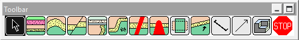
a) Defining the Base Stratigraphy
To define the Base Stratigraphy (which must be the first
step in the construction of a history, unless a pre-existing history is
read in from disk) click once on the Base Stratigraphy Icon:  which will then become highlighted. If you then move the cursor over the
History window, a dashed square will follow the cursor, and clicking in
the History window will “drop” that icon in the window.
which will then become highlighted. If you then move the cursor over the
History window, a dashed square will follow the cursor, and clicking in
the History window will “drop” that icon in the window.
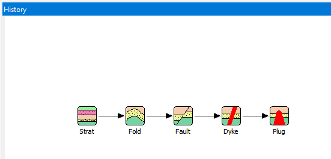
As soon as the icon is dropped, a new window will open up which allows you to define a starting stratigraphy for your model.
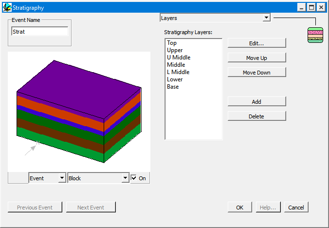
This window displays a summary of the stratigraphic column on the left hand side, and allows you to edit this stratigraphy on the right hand side.
First of all click on the name of any one of the stratigraphy layers and once the name of the layer is highlighted, click on the delete button four times to reduce the stratigraphy to three layers.
Now double click on the topmost unit name to open up a window that allows you to edit the rock properties for this unit.

•From the Name list select the rock type Psammite, this will fill in the relevant rock properties for this rock type. The only area you need to edit is the Height of the base of this unit, which should be changed to 3400. Finally click on OK.
Now edit the second unit in the stratigraphy, select the rock type Basalt, and change the Width value to 500, and click on OK.
For the lowermost unit, select the rock type Psammite and click on OK.
You have now finished defining your stratigraphy, and can click on OK from the Stratigraphy window.
b) Defining a deformation event
Suppose you want to fold this stratigraphy, first select the fold icon
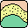
, by clicking on it and then dropping it to the right of the base stratigraphy icon in the history window. This will then open up the fold definition window, which demonstrates the standard deformation event window capabilities: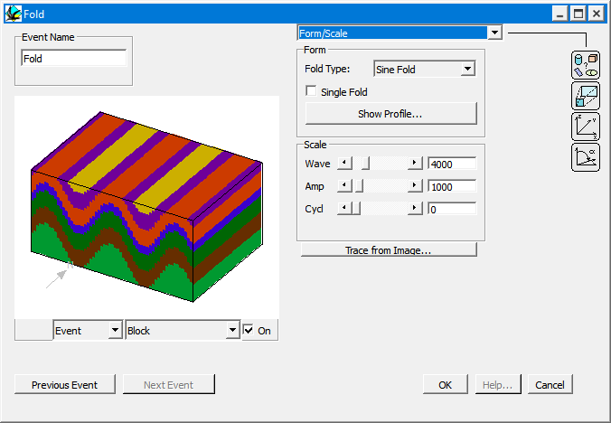
c) Previewing an event. To get a preview of the effect of this event on the pre-existing geology (in this case the base stratigraphy), select Block from the Preview type menu. A Block diagram should now be drawn in the preview space. (The cube size in the preview calculation is 60% of the size specified in the Block View Options setting, to speed up the result). In this particular example the block has dimensions 10x10x5 km and the upper-south-west corner has coordinates -1000,0,3500.
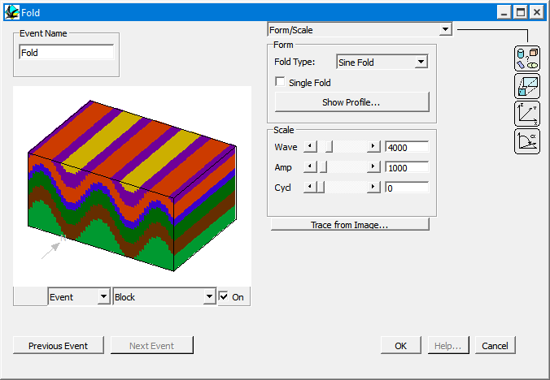
d) Editing the characteristics of an event. To alter the wavelength of this (cylindrical) fold, move the Wave scroll bar, and notice how the preview updates automatically. (Automatic updating of previews can be disabled by clicking on the On button in the lower right hand corner of the preview window.)
Reset the fold wavelength to 4000 and then click on the OK button.
You might like to save this history now, by selecting Save History from the File menu.
f) Now we will add a scissor fault so that we simultaneously
rotate one block towards the North and the other towards the South (this
will give us North and South plunging folds in one model).
Adding another deformation event. To add a fault, simply click on the Fault
Icon from the Toolbar, and drop
it to the right of the Fold Icon in the History window. A Fault definition
window will open up, and we can select the Block Preview menu item again.
We can now choose between Event, History or Full Block
Previews, by selecting from the timing menu list which has appeared to
the left of the Preview Type menu. Event timing shows only the effect
of this one event on the Base Stratigraphy; History timing shows
the history up to and including the event currently being edited, and Full
timing shows the effect of all events. In this case Full and History
blocks have the same effect as this is the youngest event, as we are currently
editing the youngest event.
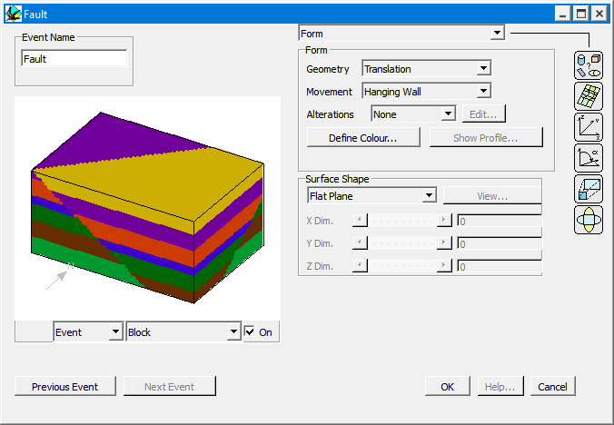
•Now change the following parameters so that we have a model with North and South plunging folds, but first turn off the automatic preview mode (the On button in the lower right hand corner of the preview window) if you have a slow machine.
- Form:Geometry Rotation
- Form:Movement Both
- Orientation:Dip Direction 90
- Orientation:Dip 90
- Position:XYZ 4000,-2000,-19000
- Scale:Rotation 25°
Your model should now have a north plunging anticline in the west and a south plunging syncline in the east, different structures, but the same outcrop pattern.
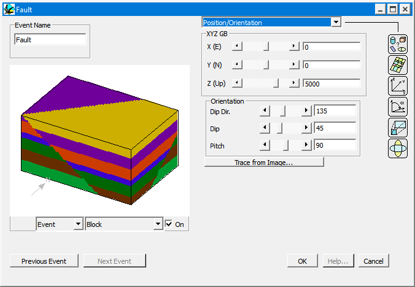
g) Previewing potential field anomalies. Just as geological models may be previewed, the gravity and magnetic images may also be previewed by selecting, for example, Magnetics from the Preview type menu, This will now calculate the magnetic anomaly associated with the currently defined geology (depending on the choice of Event/History/Full in that menu).
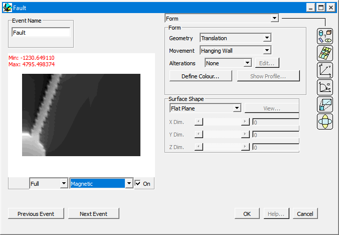
Notice the "tail" which occurs on the anomaly associated with the North plunging anticline.
Now look at the magnetic signatures below seen to the east of Golden Dyke Dome (magnetic unit is shown as thick dashed line), based on your previous modelling what is the structure here?
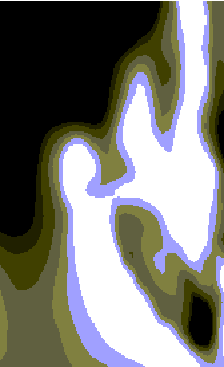
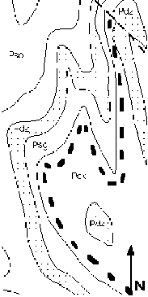
In this section
Noddy · open source under the MIT licence · Loop3D/noddy_qt